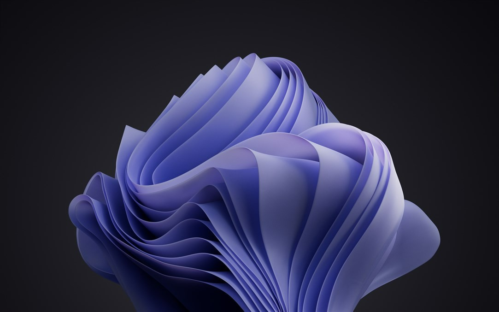

Цвет года 2022: палитра будущего
(Pantone Color Institute) — исследовательский центр компании Pantone, занимающийся экспериментальной работой с цветом и его влиянием на различные отрасли (моду, полиграфию, дизайн интерьера, рекламу, кино и пр.). Признан во всем мире как ведущий источник информации о цвете.
Первичными продуктами Pantone являются схемы Pantone Guides — гиды по цвету, представляющие собой небольшие книжки-веера из тонкого картона, на страницах которых напечатаны образцы цветов. Каждая страница посвящена конкретному цвету и включает в себя множество его оттенков. Широкую известность Институт Pantone получил именно благодаря своим системам совместимости цветов (Pantone Matching System, или PMS), главная цель которых — помочь дизайнерам сочетать определенные цвета на стадии производства. Производитель советует покупателям ежегодно заменять схемы, так как из-за выцветания и истирания за этот период передача цвета становится неточной. Инструментом для дизайнеров одежды, интерьера и товаров для дома являются схемы PANTONE FASHION + HOME Color System. Они используются в моде и производстве тканей. Система состоит из
Ежегодно Институт цвета Pantone проводит исследования, в результате которых компания представляет палитру самых актуальных оттенков предстоящего года, а также главный цвет года. Подобные прогнозы компания делает, основываясь на социальных и культурных изменениях в обществе, а также тенденциях использования того и иного оттенка в различных видах искусства и, в частности, в моде. Цвет года определяется после секретных встреч представителей различных национальных цветовых групп в одной из европейских столиц. Выбор комиссии Pantone публикуется в специальном руководстве Pantone View, которое приобретают дизайнеры, флористы и многие другие ориентированные на потребителя компании. Стоимость руководства составляет 750 долларов США.
Судя по комментариям Pantone Color Institute, оттенок сирени связан с темой виртуальной реальности, новых технологий и цифровым миром. Он символизирует глобальный дух времени и переходной период в обществе, связанный с долгими периодами самоизоляции.
После ковида цифровая и физическая жизни трансформировались, тесно переплетаясь и меняя прежние стандарты. Very Peri — иллюстрация слияния двух миров. Єпидемия повлияла на нашу нормальную жизнь и стиль работы, но она также заставила людей мыслить нестандартно. Мы не знаем, что будет завтра, но именно любопытство к неизвестному будущему помогает нам выживать. Смелое творчество — суть Very Peri.
Зачем нужны Pantone-цвета
Pantone — определенный цвет, созданный с помощью смеси нескольких цветов и имеющий свой собственный номер по классификации Pantone Matching System.
Назвав номера Pantone, вы можете быть спокойны за оттенок конечного продукта. И неважно, где вы заказываете полиграфию – в Екатеринбурге, Перми, Франкфурте или в Барселоне.
Для каждого Pantone-цвета указано, каково процентное соотношение базовых цветов CMYK следует взять, чтобы получить именно этот цвет или оттенок. Для выбора нужного оттенка Pantone существуют специальные каталоги, которые, как правило, есть в каждой типографии. Каждому оттенку соответствует свой номер.
Если при печати обычных листовок и прочих раздаточных материалов абсолютное соответствие цвета не критично, то при печати имиджевой полиграфии играет огромную роль, это узнаваемость бренда и немалые инвестиции в дизайн. Фирменный стиль — это лицо вашей компании.
Ситуация: нужно напечатать каталоги с фирменной атрибутикой. Но на деле не всё так просто. Нельзя напечатать логотип обыкновенным синим цветом и попасть в яблочко. У каждого цвета существует множество оттенков.
У каждого человека свое представление, как выглядит «небесно-голубой», «травянисто-зелёный», «огненно-рыжий».
Заказчик может попытаться описать цвет словами — рассказать про голубизну небес обетованных или про цвет моря на Бали, но для получения идеального результата нужен номер из каталога.
Зависимость цвета от материала для печати
Цвет печати зависит не только от цвета краски, но и от вида материала, на который она наносится. На глянцевой бумаге цвет будет один, а на матовой немелованной бумаге другой (не такой яркий).
Поэтому раскладки цветов печатаются в двух вариантах — coated иuncoated. При этом к номеру Pantone добавляется или буква C или U соответственно. Вы должны выбрать тот цвет, который подойдёт для вашего случая.
Тут ничего сложного нет — сувенирная продукция обычно печатается по Pantone coated. Pantone uncoated пригодятся при печати на немелованной бумаге. Например, если на внутренних листах блокнота необходимо напечатать логотип фирменным цветом, то номер Pantone нужен с буквой U — Pantone 485 U.
Чем знамениты Pantone- цвета
Ежегодно представители компании «Pantone» номинируют на 1-ое место какой-нибудь цвет из всей своей палитры.
Так, в 1999 году лазурно-голубой оттенок был признан оттенком тысячелетия, цветом 2005 года стал фиолетовый, в 2009-м победу одержала «мимоза», в 2011-м — «жимолость», в 2012-м — красно-оранжевый оттенок.
Как оказалось, данный выбор имеет вполне конкретные параметры. Постоянно за экономическим, социальным, экологическим и психологическим состоянием всей планеты наблюдают представители компании «Pantone».
Цвета выбираются, исходя из проблем, которые в данное время являются наиболее актуальными.
Интересные факты о Pantone
Миклош Кисс (kissmiklos.com) из Будапешта представил упаковку сока и айдентику Juceline, которая вызовет у дизайнеров и креативщиков радостное умиление: оформление имитирует до боли знакомые цветовые справочники Pantone. Каждой разновидности сока соответствует реальный цветовой код всемирно известной палитры.
На территории Гримальди Форум Монако (главный культурно-выставочный центр Княжества) открылось PANTONE café.Всё в этом кафе «закодировано» в одноименной цветовой модели.